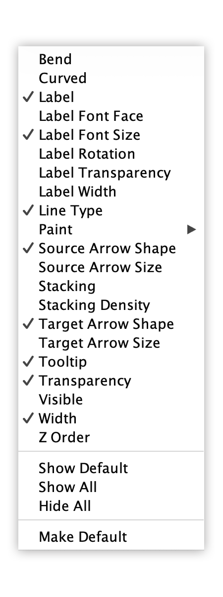
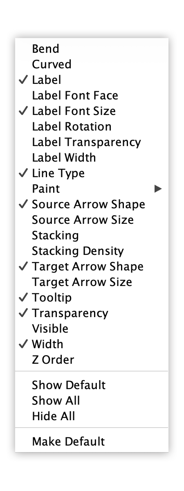
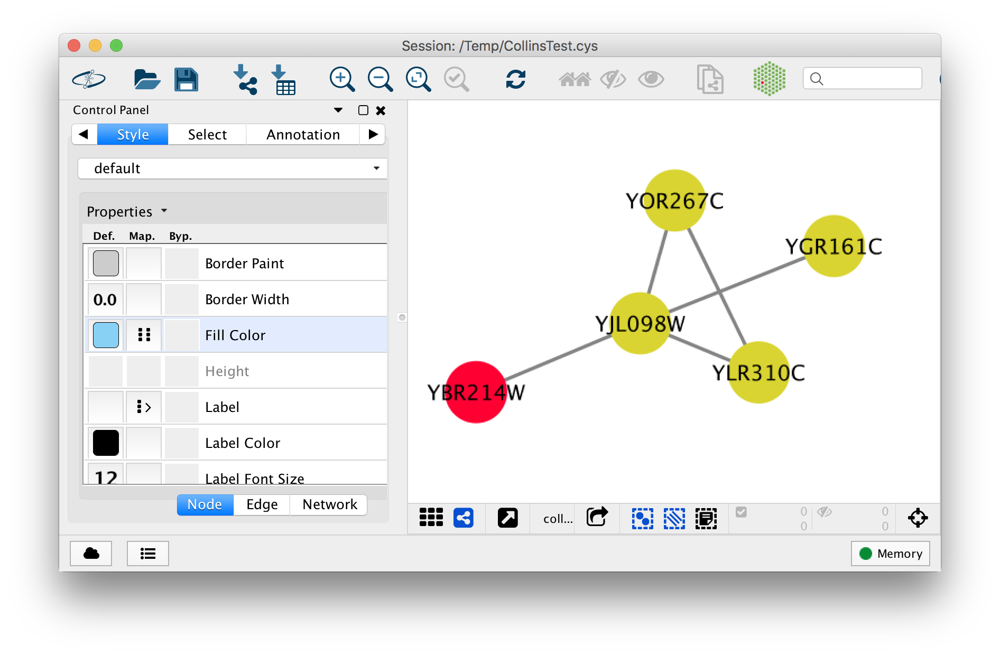

Advanced Visualization: Properties
This short protocol reviews advanced style options available.
Viewing and Adding Properties
Cytoscape has many style properties that are not shown by default.
- Go to the
Style interface and then click theProperties drop-down at the top. This will show all available properties for either Node, Edge or Network. - Properties with a checkmark are those currently displayed in the
Style interface. To add a property in order to use it for visualization, simply select the property in the list.
 

Mapping, Default and Bypass
For each property, styles are defined in columns
- Without a specific style mapping, each property will be defined by its Default.
- Any mappings defined by the user or current style will be shown in the Mapping column.
- Bypass is used to override both the mapping (if any) and the default.
Setting a Bypass
To set a node or edge bypass:
- Select the nodes or edges in the network for which you want to set the visual property.
- Click the
Byp. column for the visual property you want to set. - In the interface that opens, set the value as desired.
The resulting style will look like this:
- The altered properties will be permanently set for the selected nodes or edges.
- To clear the value, select the nodes or edges again, right-click on the
Byp. column and selectRemove Bypass .